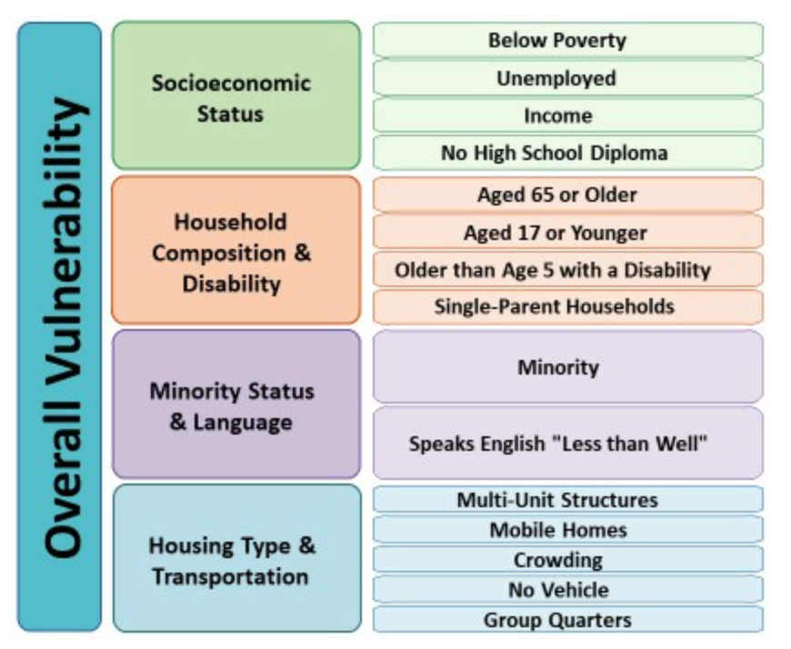

Below you will find the web application that shows the social vulnerability of US Counties to natural disasters and emergencies, 2020 cyclone tracks, and sea-level rise (SLR) projections of up to 6 feet across the US. To observe a county's social vulnerability, simply click on it within the map, and a popup will appear as a percentile ranking from 0 to 100, with 0 being least vulnerable to 100 being most vulnerable. Additional county layers provide each US County's vulnerability to each of the four themes, also presented as percentiles. To see which demographic information of 15 different social factors make up each of the four themes, check out the image/chart below provided by the Agency of Toxic Substances and Disease Registry. Use the layer list widget to control which county layers to show on the map and use the filter widget to present counties that only have a certain level of social vulnerability, have a certain level of vulnerability for the themes, located within a particular state, or any combination of the three. All of the widgets are located on the top right corner of the web app.

The cyclone track data reveals hurricanes and other related tropical events formed in the Atlantic Basin in 2020. To see which storm each track represents, merely click on the path, and the popup will reveal the storm's name and its type based on the storm’s category, with all non-hurricanes given a type of 0. To determine the storm's strength, refer to the legend, which shows the width and color used for each storm's category. In addition, there are the SLR projection data that are in one-foot increments up to six feet. All SLR increments are in the same color, so to see what SLR level is being shown in the map, check the layer list. The highest SLR increment checked on the layer list will be the SLR increment shown on the map. To control which levels of SLR are on the map, check the desired SLR level in the layer list. For instance, to see all areas projected to be inundated by 1 foot of SLR select the SLR 1 ft layer, or to see all areas projected to be inundated by 6 feet of SLR select the SLR 6 ft layer. The areas in green for the SLR represent hydrologically unconnected areas that may flood and the dark blue areas represent where there is water without SLR; however, the tile layer obtained for the SLR data did not provide an option to reveal those pieces of information in the map. Lastly, this web app provides the option to draw graphics on the map with the draw widget and to print the map with the print widget. Please read the following section below the web application to learn more about the map and the data used in it.
The prototype created for Product 1 was through ArcGIS Online's (AGOL) Web App Builder. This format was utilized for the product to aid in decision-making because it allows ARC and the users of the tool to examine the spatial extent of the US and have control of which layers they can see. This web app allows the user to explore areas that could need assistance due to exposure to hurricanes and related tropical events in the US, particularly in the southeastern part of the country. The map helps determine where assistance or resource allocation should go based on two major aspects that the web map shows, the social vulnerability to natural disasters and emergencies and exposure to the disaster.
Social vulnerability is shown in the map through the social vulnerability of the US Counties layer. This layer reveals the social ulnerability of a US County as a percentile ranking from 0 to 100, with 0 being least vulnerable to 100 being most vulnerable. This data helps reveal which areas of the US contain populations vulnerable to disasters based on a combination of various demographic information that comes from four themes. These four themes are socioeconomic status, household composition & disability, minority status & language, and housing type & transportation. Additional county layers provide the vulnerability that each US County has to each of the four themes, also presented as percentiles. Suppose the user wants to see the percentile of social vulnerability and the percentiles for the other four themes for a specific county, in that case, they can just click on the county for a popup to appear with relevant information. This information not only reveals how vulnerable US counties are to disaster, but it also reveals what aspects each county is vulnerable to, which would be very helpful for ARC to determine what resources would be needed for a specific county. For instance, if minority status & language has a high percentile value, that would reveal to ARC that translators would likely be needed. Suppose housing type & transportation has a higher percentile, this could indicate that many individuals have poor housing quality and a lack of transportation, so a shelter to use during a storm or disaster that's easily accessible would likely be needed. With this map, users also can filter the county data, which means users can look at counties that have a certain level of social vulnerability, have a certain level of vulnerability for the themes, located within a particular state, or any combination of the three. Examining this data shows that many of the more socially vulnerable US Counties are located in the southeastern part of the country, where most hurricanes and related tropical events pass through, which is essential to recognize to help those dealing with disasters properly.
The exposure data is presented as cyclone tracks from 2020 and sea-level rise (SLR). These data show how much of a threat hurricanes and related tropical events are to communities in combination with the social vulnerability data. The hurricane data is categorized by strength (miles per hour), and each one-foot increment categorizes SLR. For the SLR data, the user has the option of turning on and off each layer to see which areas are projected to be inundated at a certain level of SLR or storm surge. The combination of exposure and social vulnerability data will help ARC see which areas have the greatest risk of being inundated by water through storm surge and not having the appropriate resources to prepare, respond, and recover from the event.
Using this format for Product 1 to aid in decision-making presents many advantages. First, while often a feature with online mapping, the transparency option allows the user to see through them, have a general area where SLR impacts counties, and see how socially vulnerable a county is. Also, the layer list in the web app allows the user to control which layers they can turn off and on, so if the user only wants to look at one aspect of the map, they have the option to do so. As mentioned previously, the user can filter data out with the filter feature that the web app provides to look specifically at counties that may be of interest to them when observing the map. However, while relatively minor, there are some disadvantages to this tool. One, it would be more user-friendly if a slider could be used for SLR data, allowing a user to more easily see increases or decreases in SLR without having to go to the layer list to check and uncheck each layer. However, having the option of checking and unchecking the layers still makes this tool user-friendly. Also, if ARC wishes to edit or update this map, they need to ensure that they have an AGOL account, which costs money to obtain. Overall the tools offered through this web app are very user-friendly and can be helpful in decision making; however, the biggest issue will be the access to edit and update, which will need to be done at some point.
The data used to create the map in Product 1 were obtained from four different sources. The Social Vulnerability Index data was downloaded as a shapefile from the Agency of Toxic Substances and Disease Registry. This shapefile contained US Counties' data from the US Census Bureau with information used to determine the social vulnerability of a US county that includes the 15 social factors and four themes used to calculate each county's social vulnerability. The demographic information used for these calculations were from the 2014-2018 American Community Survey. State outline data was downloaded from the US Census Bureau to help ARC and viewers of the map have a better sense spatially of where the counties or areas that they examine are. Since the social vulnerability data county outlines were also from the US Census Bureau, the state outlines perfectly overlaid with the county data.
The remaining data were obtained through AGOL's Living Atlas. The sea-level rise (SLR) data was provided as a tile layer from Living Atlas. NOAA provided title layers of SLR data from 1 to 6 feet at this link for the whole US on Living Atlas. One tile layer was available for each one-foot increment of SLR at the link provided, and each title layer was added to the web application as a layer. Lastly, a cyclone track layer from 2020 was added which was created by NOAA found on Living Atlas at this link and published by Emily Meriam. This data provides tracks of all named storms from Tropical Depressions to Category 5 Hurricanes across the globe. However, since the focus of this website is looking at hurricanes and related tropical events in the US, particularly within the southeastern part of the country, the cyclone track data was filtered to only include storms that formed in the Atlantic Basin. Filtering this data allows the user to focus specifically on storm tracks that impact our area of interest.
The advantage of having these data is that they clearly identify areas socially vulnerable to disasters and the exposure to them through the hurricane and SLR data. The social vulnerability data does a great job of explaining how vulnerable populations are by revealing how socially vulnerable each county is and how vulnerable they are concerning the four themes. The other datasets show exposure information clearly and provide relevant detail regarding how strong the storm was at a particular part of its track and which areas are expected to be inundated by the storm surge at a certain level. The main disadvantages that are present with the data are mainly with the cyclone track and SLR data. While the cyclone track data provides information on its strength and location, the dates of the storms are not provided by this data. This information could be helpful to reveal what time of year certain areas may anticipate a storm of particular strength. Another disadvantage of the data is that SLR data can only be used up to 6 feet of inundation while hurricanes can cause storm surges much higher, like Hurricane Laura last year, which had storm surges of over 15 feet. So while helpful, the SLR data is limited in how much information it can provide on areas that may potentially be inundated during a hurricane or related tropical event. Suppose there is a storm that arrives and produces storm surge well over 6 feet. In that case, ARC or any other users of this map will not see all areas potentially exposed to storm surge, meaning that these layers will be most beneficial for storms projected to have lower amounts of storm surge. Lastly, NOAA states here that they may not be able to capture all areas that potentially flood in hydrologically unconnected areas as canals, stormwater drains, or ditches may not have been caught in the mapping process. However as these are projections, ARC should not assume that these data will be perfect, rather they should use the data as a general guideline of which areas are potentially exposed to certain levels of storm surge. Despite these limitations, the data still give ARC information on who is most vulnerable and exposed to hurricanes and related tropical events.